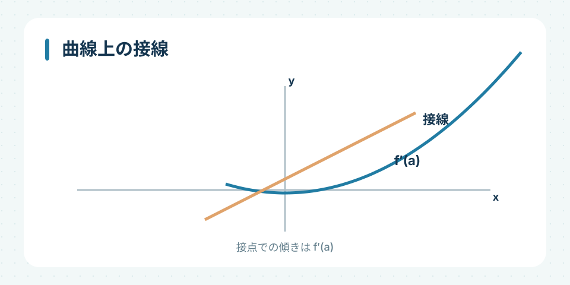

微分と接線・増減表
微分はグラフの「その瞬間の傾き」を表します。接線の式と極大・極小の判定は、導関数を使う代表的な入試問題です。
このページで学べること
導関数でグラフを読む。要点を読んだら、最後の確認問題で理解度をチェックしましょう。
接線の公式

曲線 y = f(x) の x = a における接線は、傾き f′(a) と通過点 (a, f(a)) を使い、次の式になります。
f(1) = 0、f′(x) = 2x − 3 なので f′(1) = −1。
y − 0 = −1(x − 1) より y = −x + 1。
導関数の符号と増減
一般に f′(x) > 0 で増加、f′(x) < 0 で減少します。導関数が 0 になる点を探し、前後で符号がどう変わるかを見ると極大・極小がわかります。
f′(x) = 3x(x − 2)。符号は ＋｜x=0｜−｜x=2｜＋。
極値を判定するときの注意
f′(a) = 0 だけでは極値とは限りません。たとえば f(x)=x³ は x=0 で f′(0)=0 ですが、左右とも増加しているため極値ではありません。
確認問題に挑戦！
全3問。答えを考えてから「解答と解説を見る」を押してね。
y = x² + 2x の x = 1 における接線の式は？
解答と解説を見る ＋
y = 4x − 1
f(1)=3、f′(x)=2x+2 より傾き4。y−3=4(x−1)。
f(x) = x³ − 3x の極大値と極小値は？
解答と解説を見る ＋
極大値 2（x = −1）、極小値 −2（x = 1）
f′(x)=3(x−1)(x+1)。符号が ＋→− で極大、−→＋ で極小。
y = 2x² − 4x + 5 の x = 0 における接線の式は？
解答と解説を見る ＋
y = −4x + 5
f(0)=5、f′(0)=−4 を接線公式に代入。
接線は「点と傾き」、極値は「導関数の符号の変化」。
ここまで読めたら、ひと区切り。
理解できたら学習済みにチェックして、次の記事へ。
StudyMasterの無料学習コンテンツです。AIを補助的に用いて作成しています。例題・解答は公開前にご自身でも確認してください。内容に誤りがある場合は、学校の教科書などと照合してください。
公開・更新：2026年11月12日